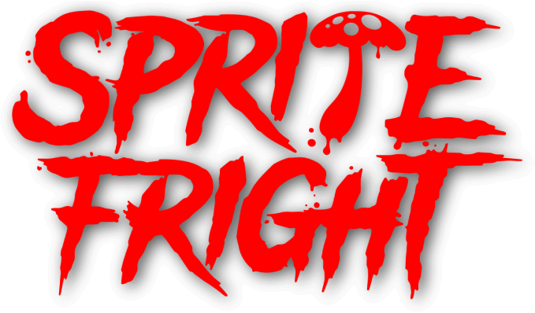

Charge is Blender Studio’s 14th Open Movie is a high-visual-impact,
action-packed 3-minutes-long animation inspired by the game
cinematics and realtime demos formats.
The goals of the project are to challenge Blender and the
creative team to pursue realism and push Blender’s capabilities
in the interactive PBR workflow.
Spring is the story of a shepherd girl and her dog,
who face ancient spirits in order to continue the cycle of life.
This poetic and visually stunning short film was written and
directed by Andy Goralczyk, inspired by his childhood in the
mountains of Germany.

Hendrik IJzerbroot – Agent 327 – is a secret agent working
for the Netherlands secret service agency. In the twenty comic books that
were published since 1968, Martin Lodewijk created a rich universe with
international conspiracies, hilarious characters and a healthy dose of
Dutch humour.
Coffee Run was directed by Hjalti Hjalmarsson and produced by the team at
Blender Studio. Fueled by caffeine, a young woman runs through the bittersweet
memories of her past relationship.

Blender Studio’s 13th open movie is an 80’s-inspired horror comedy, set in Britain:
When a group of rowdy teenagers trek into an isolated forest, they discover peaceful
mushroom creatures that turn out to be an unexpected force of nature.
Blender Studio is the creative part of the Blender HQ. A dedicated team of artists
and developers challenge themselves with creative-technical targets to help Blender
users and to drive Blender development forward.